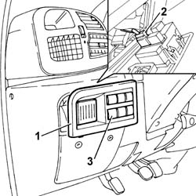

2730B16 REAR TRACTION ENGAGEMENT/DISENGAGEMENT CONTROL SWITCH - R.R.
- Path
- Procedures > 27 AXLE > 2730 DIFFERENTIAL LOCKING AND INTEGRAL TRACTION CONTROL > 2730B ELECTROPNEUMATIC CONTROL FOR INTEGRAL TRACTION R.R. > 2730B16 REAR TRACTION ENGAGEMENT/DISENGAGEMENT CONTROL SWITCH - R.R.
- Kind
- repair procedure (removal / refitting; the operation number is the code)
- Applies to
- engines: 2.0 16V, 2.8 JTD 8V; all production periods
- Interactive page
- https://sloeber94.github.io/elrnDB-fDct/en/#/244001074
Applies to: engines: 2.0 16V, 2.8 JTD 8V; all production periods; only with equipment: 4X4
 Removing
Removing
 Refitting
Refitting
Applies to: engines: 2.0 16V, 2.8 JTD 8V; all production periods; only with equipment: 4X4
Refitting
Removing